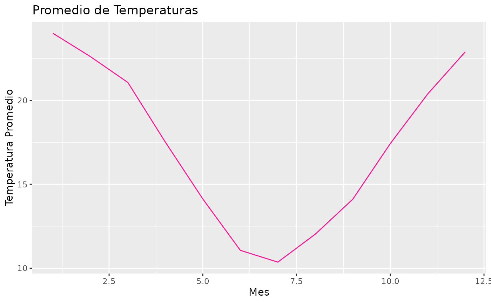

Esta viñeta es para demostrar como utilizar las funciones de este paquete.
- La funcion
lectura_estaciones()sirve para leer o descargar datos de estaciones agroclimaticas.
suppressMessages(lectura_estaciones("NH0046", "~/prueba_paquete"))
#> # A tibble: 17,041 × 35
#> id fecha temperatura_abrigo_150cm temperatura_abrigo_150cm_maxima
#> <chr> <date> <dbl> <dbl>
#> 1 NH0046 1973-01-01 27 33.6
#> 2 NH0046 1973-01-02 27.2 34.9
#> 3 NH0046 1973-01-03 25.2 29.6
#> 4 NH0046 1973-01-04 26.4 32.6
#> 5 NH0046 1973-01-05 26.0 31
#> 6 NH0046 1973-01-06 20.4 27.5
#> 7 NH0046 1973-01-07 24.8 28.9
#> 8 NH0046 1973-01-08 20.0 27.1
#> 9 NH0046 1973-01-09 23.8 32.7
#> 10 NH0046 1973-01-10 27.0 32.2
#> # ℹ 17,031 more rows
#> # ℹ 31 more variables: temperatura_abrigo_150cm_minima <dbl>,
#> # temperatura_intemperie_5cm_minima <dbl>,
#> # temperatura_intemperie_50cm_minima <dbl>,
#> # temperatura_suelo_5cm_media <dbl>, temperatura_suelo_10cm_media <dbl>,
#> # temperatura_inte_5cm <lgl>, temperatura_intemperie_150cm_minima <lgl>,
#> # humedad_suelo <lgl>, precipitacion_pluviometrica <dbl>, granizo <dbl>, …- La funcion
tabla_resumen_temperatura()sirve para resumir los datos del archivo de la estacion ingresada.
suppressMessages(tabla_resumen_temperatura(NH0098))
#> # A tibble: 7 × 2
#> id resumen_temp
#> <chr> <table[1d]>
#> 1 NH0098 -17.40000
#> 2 NH0098 14.10000
#> 3 NH0098 19.10000
#> 4 NH0098 18.61621
#> 5 NH0098 23.25000
#> 6 NH0098 37.40000
#> 7 NH0098 193.00000- La funcion
grafico_temperatura_mensual()sirve para graficar la temperatura promedio de los meses registrados.
grafico_temperatura_mensual(NH0046, color = "deeppink", titulo = "Promedio de Temperaturas")